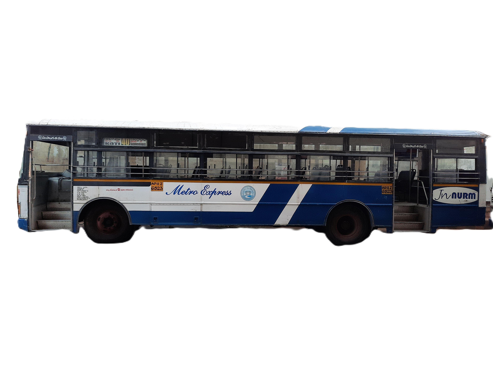
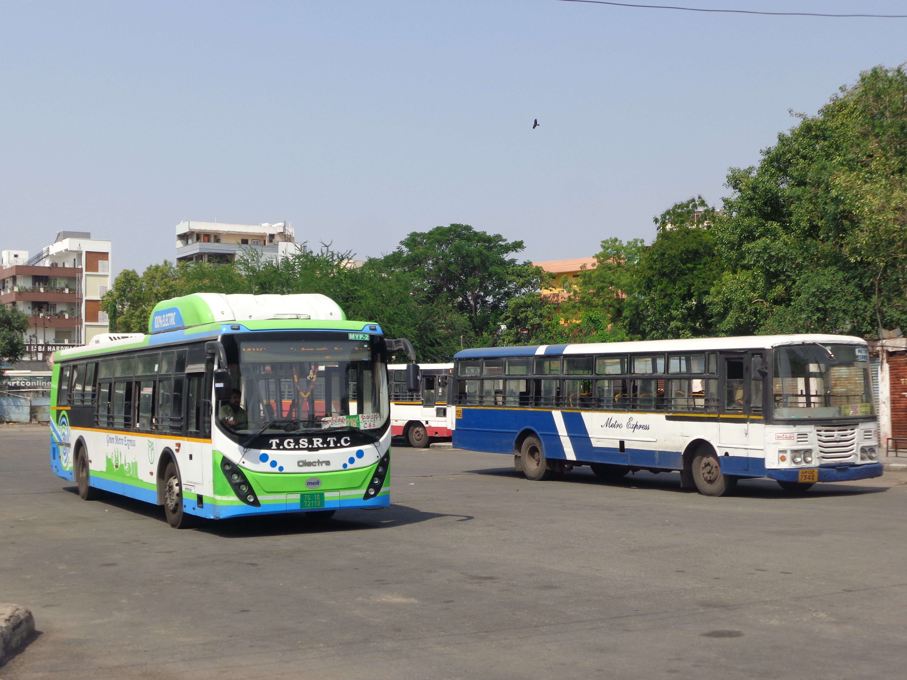

One TGSRTC diesel bus
15 kg
Total CO₂ emissions over 10 km. The bus carries all 48 passengers together and occupies approximately 12 metres of road length.
Imagine 48 people making the same 10-kilometre urban journey. First, 12 cars carry these 48 people. Then, the very same 48 people travel together in one TGSRTC bus.

The following figures are taken from the information shared by TGSRTC. Each option moves the same 48 passengers over a standard 10 km urban journey.
Total CO₂ emissions over 10 km. The bus carries all 48 passengers together and occupies approximately 12 metres of road length.
Estimated CO₂ emissions over 10 km. The cars occupy approximately 60 metres in a line, compared with approximately 12 metres for the bus.
Estimated CO₂ emissions over 10 km. TGSRTC's comparison describes the cars across two lanes and lists approximately 120 metres combined.
| Parameter | 1 TGSRTC diesel bus | 12 cars | 24 cars |
|---|---|---|---|
| Total passengers | 48 | 48 | 48 |
| Occupancy per vehicle | 48 passengers/bus | 4 passengers/car | 2 passengers/car |
| Road footprint (length) | ~12 m | ~60 m | ~120 m combined (table) |
| Total CO₂ for 10 km | 15 kg | 16.8 kg | 33.6 kg |
After shifting journeys from private cars to public transport, electrifying the bus fleet can reduce the total emissions for the same 10-kilometre journey.

A visual comparison of the existing diesel fleet and electric buses.
Total CO₂ over 10 km.
Total CO₂ over 10 km.
Less CO₂ over the same 10 km journey.
First, move more people in buses instead of individual cars. Then, reduce bus emissions further by transitioning the fleet from diesel to electric. Better public transport and fleet electrification can help build a cleaner, less congested Hyderabad.